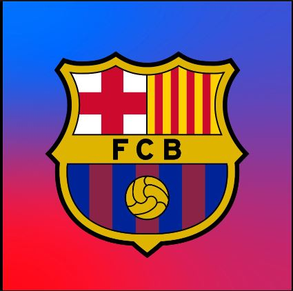

/origin-imgresizer.eurosport.com/2022/09/17/3455284-70490848-2560-1440.jpg)
Mi nombre es Edwin Jose Chamorro Cera, estudiante de la Universidad de la Costa de Ingenieria de Sistemas cursando cuarto semestre.
Mi deporte favorito es el fútbol siendo mi equipo favorito el Barcelona de España.
El Fútbol Club Barcelona, conocido popularmente como Barça, es una entidad polideportiva con sede en Barcelona, Cataluña, España.
Fue fundado como club de fútbol el 29 de noviembre de 1899 y registrado oficialmente el 5 de enero de 1903.
Ha sido a lo largo de los años uno de los mayores exponentes del deporte ganando gran cantidad de torneos en los que ha participado.
siendo la cuna de leyendas que marcaron un antes y un despues en la historia del futbol
Actualmente, cuenta con estrellas como
Robert Lewandoski
Marc Andre Ter Stengen

Sergi Roberto

Ilkay Gundogan.

Dirigiendo el conjunto culé una de las maximas leyendas del club y del futbol español Xavi Hernandez, quien antes de desempeñarse como tecnico fue.
una de las piezas claves como jugador para la epoca dorada del club ganando absolutamente todo a nivel de clubes y seleccion

A lo largo de su historia el Futbol Club Barcelona ha contado con una
gran cantidad de estrellas de talla mundial, siendo su mayor leyenda
Lionel Messi.
Junto con Messi hay muchos jugadores que dejaron una importante
huella en el club, algunos de estos son: Xavi Hernandez, Andres Iniesta, Carles Puyol, Sergio Busquets, Gerard Pique, Ronaldinho, Jordi Alba, Johan Cruyff, Victor Valdes, Diego Armando Maradona, Neymar, Luis Suarez, Ronaldo.


/cloudfront-eu-central-1.images.arcpublishing.com/prisa/POHQNEHNAJCJXOQYHAAAKUTHDQ.jpg)


De entre estas leyendas del club hubo una que no solo sobresalio como jugador sino que volvio al
FCB como entrenador liderando lo que se llamaria la edad dorada del Barcelona, desde el 2008 hasta la temporada 2011/12.

Este es Josep Guardiola, que con su vision del juego revoluciono el deporte cambiando los paradigmas que predominaban el futbol europeo,
en su llegada saco al Barcelona de una mala racha ganando la Liga, Copa del Rey y la Champions.
Con este fin de temporada el Barcelona siguio imparable al salir triunfante en la Supercopa de España,
Supercopa de Europa y Mundial de Clubes consiguiendo algo nunca antes visto en el futbol, un sextete, se convirtio en el primer equipo en ganar todos los torneos posibles disputados en un año natural en la temporada 2009/10.